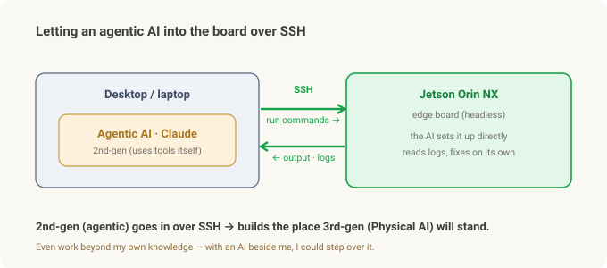
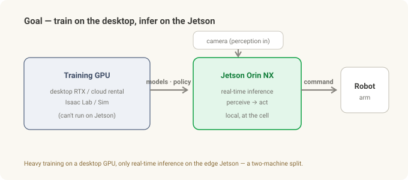
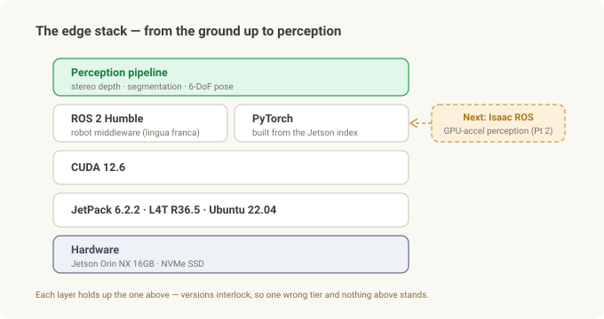

Putting the Robot's Brain on the Edge (1) — From JetPack to ROS 2, and the Walls I Hit¶
Field notes · "The Robot's Brain on the Edge," Part 1 of 2. This part is the road from a bare Jetson board to ROS 2 running. Part 2 puts Isaac ROS on top for GPU-accelerated perception.
First, a word on how this piece was written. A good share of the setup below, I didn't type myself. The first thing I did at the start was open SSH on the Jetson so an agentic AI (2nd-gen — Claude) could reach the board directly, and from there the AI ran the commands, read the logs, and worked through the blockers faster than my own hands. I climbed past my own knowledge and ability with 2nd-gen AI, up onto 3rd-gen Physical AI. How I wired that up comes shortly — first, what we're building and why.
The Robot Vision series was about how a robot sees — the pipeline that measures depth from stereo, cuts out the object with a mask, and pins down a 6-DoF pose. But all of that has to actually run somewhere — not in the cloud, but on a palm-sized computer bolted to the cell.
This is the story of building that "somewhere." Standing up the stack that becomes a robot's brain, from scratch, on a small edge computer called a Jetson Orin NX. And the honest version — the walls that hit me between unboxing the board and getting ROS 2 to run.
Physical AI is really about "AI moving into the robot." The place that AI actually lands is this edge computer. So this isn't a glamorous story; it's a story of grinding at the bottom of the stack. If it saves someone else the same grinding, good.
In 30 seconds¶
- Edge AI = running the perceive→act loop on a small computer next to the cell, with no cloud. That computer is a Jetson (NVIDIA's edge GPU board).
- Hardware: Jetson Orin NX 16GB + an NVMe SSD (effectively required). Perception models and Docker images are too big for an SD card.
- JetPack (Jetson's OS + drivers + CUDA bundle) 6 flashed → Ubuntu 22.04 / CUDA 12.6. (Deliberately 6, not the newest 7 — more stable, thicker support.) The first walls show up here.
- ROS 2 Humble via apt — the common language of robot software. This part was relatively smooth.
- The biggest wall:
pip install torchpulls the wrong CUDA build and won't run → you have to get it from a Jetson-specific index. The point where desktop instincts betray you. - The big picture: heavy training on a desktop or cloud GPU, inference on the Jetson. ROS 2 is the on-ramp to the next step, Isaac ROS — which is Part 2.
- Why it went fast: I started by opening SSH on the Jetson so an agentic AI (2nd-gen — Claude) could reach the board directly. I climbed past my own knowledge with 2nd-gen AI to get up onto 3rd-gen Physical AI.
- This is a general Jetson setup experience, not a specific field deployment.
First — letting the AI in over SSH¶
This is the first place edge development diverges from the desktop. A Jetson is usually run headless (no monitor). So the starting sequence looks like this:
- First boot only with a monitor and keyboard, to finish the initial setup (account, network).
- Put it on the network over wired Gigabit Ethernet. (My industrial carrier board has no WiFi module, so wired was the surest path.)
- Find the Jetson's IP (a static IP helps), and set up key-based SSH login from the desktop so you get in without a password (
ssh-keygen→ copy the public key to the board). - Then hand that SSH connection to an agentic AI (Claude). Now the AI runs commands on the board directly, reads the output and logs, and fixes things when it gets stuck. (If you need remote access, something like Tailscale gives you the same address from anywhere.)
That one setup changed the speed of everything after it. The walls coming up — the CUDA mismatch, the kernel breakage, the PATH issues — were mostly solved not by me but by the AI beside me, reading the logs as it went.

There's a nice nesting here. The generations from the Robot Vision series — 1st-gen generative (text, images), 2nd-gen agentic (decides for itself and uses tools), 3rd-gen physical (AI that moves into the robot). I used 2nd-gen agentic AI to stand up the edge box where 3rd-gen Physical AI will land. The 2nd generation laid the runway for the 3rd. So this isn't a story about an experts-only domain — even work beyond my own knowledge, I could get over it with an AI beside me.
Why the edge, and why Jetson¶
The loop where a robot sees and grabs a part — see, decide, move, feel force, correct — has to run in milliseconds. Round-trip it to the cloud? Latency is fatal, a dropped connection stops the robot, and plant security often forbids outbound connections at all. So perception and decision have to run locally, on a computer attached to the cell.
The catch is that this "small computer" needs a GPU. Deep-learning perception models are unusably slow without one — and you can't cram a desktop graphics card into a cell.
Jetson is the answer: NVIDIA's palm-sized edge computer with a GPU built in. The Orin NX is low-power and small while still packing enough GPU to run a perception pipeline. Two things are worth settling up front:
- Why 16GB — stereo, segmentation, and pose models eat a fair amount of memory. There's an 8GB variant, but run several models at once and it's tight. 16GB is the safe choice.
- Why an NVMe SSD — this is what beginners miss most. Perception frameworks, Docker images, and model files quickly become tens of GB. They simply won't fit on the default storage (eMMC or an SD card). Booting from an NVMe SSD is effectively a prerequisite. (I used a 128GB NVMe, and the factory image left about half of it unallocated, so I had to grow the partition to full disk with
parted.)
Flashing JetPack 6 — replacing the OS from the ground up¶
First, terms. JetPack isn't plain Ubuntu — it's a bundle of OS + GPU drivers + CUDA + acceleration libraries assembled for Jetson, sitting on a kernel called L4T (Linux for Tegra). Because the versions are all interlocked, touching the wrong thing brings the whole thing down.
The board shipped on an old JetPack (5.x). To get newer CUDA / Ubuntu / ROS 2, I re-flashed to JetPack 6.2.2 (L4T R36.5, Ubuntu 22.04, CUDA 12.6, Python 3.10). Flashing is done from an Ubuntu host PC with SDK Manager, putting the board into recovery mode and writing to the NVMe.
But one thing here was a deliberate choice — stopping at JetPack 6, not the newest JetPack 7. On the edge, "newest" isn't the answer. JetPack 6 is already well-stabilized, and its ecosystem support is thick: drivers, prebuilt ML packages (the Jetson PyTorch that comes up later), Isaac ROS, and a pile of accumulated community answers. The newest 7 is out front, but its support is still thin. I chose "proven and supported" over "newest" — a judgment that matters more the closer a thing gets to the floor.
Here are the walls that hit me — all real:
- Do not run
sudo apt upgrade. Type it out of habit and you break the kernel. If you don't firstapt-mark holdthenvidia-l4t-*packages, the A/B-partition post-install step fails on a single-NVMe layout and boot dies withRootfs AB is not enabled. Drop the update habit on JetPack. nvccisn't on PATH. CUDA is installed but the compiler isn't found. You have to add/usr/local/cuda/binto PATH and the library path toLD_LIBRARY_PATHyourself (.bashrc).pip3,nano,curlaren't even installed. It's a minimal image; you install the basics yourself.- Network interface names change. On JetPack 6, names like
eth0become things likeenP8p1s0, so old scripts and static-IP configs quietly break.
One lesson: JetPack is not "Ubuntu plus a little" — it's "a version-locked Ubuntu that breaks easily when you poke it." Bring desktop-Linux habits straight over and you'll get burned at least once.
ROS 2 Humble — the common language of robot software¶
ROS 2 (Robot Operating System 2), despite the name, isn't an OS — it's middleware for robot software. You make pieces like camera, perception, and motion into "nodes," and the nodes talk to each other over "topics." It's effectively the industry's common language, which makes it easy to bolt on parts other people built.
Humble is its LTS (long-term support) release. Installing it was relatively smooth — apt the ros-humble-ros-base package from packages.ros.org, install the build tool colcon via apt too, and source it in .bashrc.
The real wall came not from ROS 2 but from the GPU stack standing right next to it.
The real wall — the night PyTorch wouldn't run¶
To run perception models you need PyTorch (a deep-learning framework) on the GPU. So I typed pip install torch without thinking. That mistake ate days.
Plain pip pulls a PyTorch built for the newest CUDA (say, CUDA 13). But my Jetson's driver is CUDA 12.6. The versions don't match, so it can't grab the GPU and throws a pile of inscrutable errors. On a desktop this would just work. Here it doesn't.
The fix was to get it from a Jetson-specific index. You have to pull PyTorch from NVIDIA's Jetson package index (Jetson AI Lab, built for JetPack 6 / CUDA 12.6) so the GPU is properly detected — not plain PyPI.
This is the essence of the edge. The CPU architecture (ARM), CUDA version, JetPack, and framework build are all interlocked in one chain, so a one-line command that's routine on a desktop is anything but here. Nine times out of ten, the answer to "why won't this work" is a version mismatch.
The big picture — where this is going¶
That's the "as far as I've gotten" point. But you need to see where this setup is headed to understand why I did all of it.

The goal is a two-machine division of labor.
- Training on a desktop (or cloud) GPU. Heavy work like simulation and model training goes to an RTX-class desktop GPU — or a rented cloud GPU if you don't have one. (Either way, the Jetson can't do it — a gotcha in its own right.)
- Inference on the Jetson. The trained models/policies come down to the Jetson, which runs only the real-time perceive→act loop at the cell.
And an honest confession. The control loop that actually runs today is plain Python — grab a frame from the camera, run the model, send a command to the robot. ROS 2 is still closer to "nice-to-have infrastructure." So why bother installing ROS 2 at all?
Because it's the on-ramp to the next step, Isaac ROS.

Next — Isaac ROS¶
Now that ROS 2 is up, the next step is Isaac ROS — NVIDIA's collection of GPU-accelerated ROS 2 perception packages. Think of it as the on-Jetson implementation of the very pipeline from the Robot Vision series — stereo depth, segmentation, 6-DoF pose — running fast and zero-copy on the board.
One fork worth flagging ahead of time: Isaac ROS recently split into two tracks — an older JetPack 6 / ROS 2 Humble line, and a newest JetPack 7 / ROS 2 Jazzy line. On my JetPack 6.2.2, by the same "stable and supported" logic I used to pick 6, the Humble side is the natural choice. Part 2 builds the perception stack on top of it.
Summary¶
| Step | Core | The wall that hit me |
|---|---|---|
| Hardware | Orin NX 16GB + NVMe SSD | SD card too small — NVMe required, grow the partition |
| JetPack 6 | OS+drivers+CUDA bundle, flashed via SDK Manager | apt upgrade breaks the kernel · nvcc PATH · missing basics · NIC renames |
| ROS 2 Humble | robot middleware, installed via apt | (smooth) |
| PyTorch/GPU | runs the perception models | pip torch CUDA mismatch → Jetson-specific index |
| Big picture | train on desktop, infer on Jetson | today's loop is plain Python; ROS 2 is the road to Isaac ROS |
| Next (Part 2) | Isaac ROS | the two-track fork (Humble vs Jazzy) |
The one thing to remember: edge setup is hard not because Linux is hard, but because architecture, CUDA, JetPack, and framework versions are all interlocked in one chain. Knowing in advance where desktop instincts betray you turns days of grinding into an afternoon.
Related: From Stereo to Grasp · Frames & Transforms · Investing in Physical AI
Sources & trademarks¶
Versions and procedures follow NVIDIA's JetPack/Jetson documentation and the public ROS 2 (Humble) docs; JetPack, CUDA, ROS 2, and PyTorch versions vary by date and module, so these are approximate to my setup. Check the latest docs for your exact module before installing. This article is a general Jetson development-setup experience, not a specific field deployment. Jetson, JetPack, Isaac ROS, and CUDA are trademarks of NVIDIA; ROS is a trademark of Open Robotics — used here for identification only.
Glossary¶
- Jetson — NVIDIA's small edge GPU computer; Orin NX is a mid-tier module in the family
- JetPack — the Jetson-specific bundle of OS + drivers + CUDA + acceleration libraries
- L4T (Linux for Tegra) — the Jetson Linux kernel / BSP that JetPack sits on
- CUDA — NVIDIA's platform for computing on the GPU; its version must match the framework
- ROS 2 · Humble — robot-software middleware and its LTS release
- colcon — the ROS 2 workspace build tool
- NVMe SSD — fast storage; effectively required to run a perception stack on Jetson
- Edge AI — running AI directly on the on-site device instead of in the cloud
- Isaac ROS — NVIDIA's GPU-accelerated ROS 2 perception packages (the subject of Part 2)